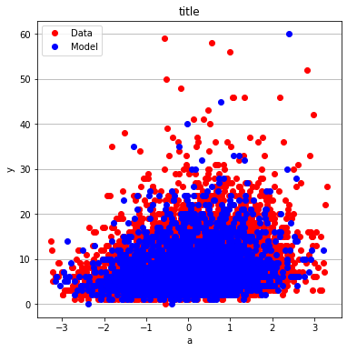
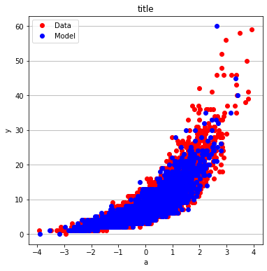

Poisson Regression¶
Poisson regression is a type of model fitting exercise where the observed responses are discrete encoded \(Y_i \in \{0,1,2,\dots,\aleph_0\} \), but more than just binary.
The Poisson regression kernel function is typically:
\[\mu_i(\beta) = {e^{X_i~\beta}} \]
or
\[\mu_i(\beta) = log({X_i~\beta}) \]
where \(X_i\) is the i-th row of the design matrix, and \(\beta\) are unknown coefficients.
The associated optimization problem is to minimize some measure of error between the model values (above) and the observed values, typically a squared error is considered.
If we consider a single observatyon \(Y_i \in \{0,1,2,\dots,\aleph_0\} \) the error is
\[\epsilon_i = Y_i - \mu_i(\beta) = Y_i - {e^{X_i~\beta}} \]
The function we wish to minimize is
\[\min_{\beta} (Y - \mu(\beta))^T(Y-\mu(\beta))\]
Homebrew Type 1¶
# build a dataset -
import numpy as np
from numpy.random import normal
import math
M = 10_000
x = np.hstack([
normal(0.0, 1.0, M).reshape(M, 1),
normal(0.0, 1.0, M).reshape(M, 1),
normal(0.0, 1.0, M).reshape(M, 1)
])
z = np.dot(x, np.array([0.15, 0.5, 0.2])) + 2.0 + normal(0.0, 0.01, M)
y = np.exp(z)
X = x # Design Matrix
Yobs = [math.trunc(item) for item in y] # Discrete Target vector
print(X[2][0])
print(x[2][0])
print(Yobs[0])
1.6339426294725867
1.6339426294725867
3
def mu(b0,b1,b2,b3,x,y,z): #poisson function (scalar) 3-design columns
import math
mu = math.exp(b0+b1*x+b2*y+b3*z)
return(mu)
def sse(mod,obs): #compute sse from observations and model values
howmany = len(mod)
sse=0.0
for i in range(howmany):
sse=sse+(mod[i]-obs[i])**2
return(sse)
def merit(beta): # merit function to minimize
global Yobs,X #access lists already defined external to function
mod=[0 for i in range(len(X))]
for i in range(len(X)):
mod[i]=mu(beta[0],beta[1],beta[2],beta[3],X[i][0],X[i][1],X[i][2])
merit = sse(mod,Yobs)
return(merit)
beta = [0,0,0,0] #initial guess of betas
merit(beta) #check that does not raise an exception
778417.0
import numpy as np
from scipy.optimize import minimize
#x0 = np.array([-3.0597,0.1615])
x0 = np.array(beta)
res = minimize(merit, x0, method='powell',options={'disp': True , 'maxiter':10 , 'return_all' : True})
Optimization terminated successfully.
Current function value: 1057.655865
Iterations: 5
Function evaluations: 259
res.x
array([1.92944313, 0.15667965, 0.52171258, 0.20815668])
res.fun
array(1057.6558646)
Using sklearn package¶
https://scikit-learn.org/stable/modules/generated/sklearn.linear_model.PoissonRegressor.html
First using all the data:
# import the class
from sklearn.linear_model import PoissonRegressor
X_train = X
y_train = Yobs
# instantiate the model (using the default parameters)
#logreg = LogisticRegression()
posreg = PoissonRegressor()
# fit the model with data
posreg.fit(X_train,y_train)
#
y_pred=posreg.predict(X_train)
print(posreg.intercept_)
print(posreg.coef_)
#y.head()
1.956198345493087
[0.14249117 0.47338079 0.18877527]
# split X and y into training and testing sets
from sklearn.model_selection import train_test_split
X_train,X_test,y_train,y_test=train_test_split(X,Yobs,test_size=0.25,random_state=0)
# import the class
from sklearn.linear_model import PoissonRegressor
# instantiate the model (using the default parameters)
#logreg = LogisticRegression()
posreg = PoissonRegressor()
# fit the model with data
posreg.fit(X_train,y_train)
#
y_pred=posreg.predict(X_test)
# Load a Plotting Tool
import matplotlib.pyplot as plt
def make1plot(listx1,listy1,strlablx,strlably,strtitle):
mydata = plt.figure(figsize = (6,6)) # build a square drawing canvass from figure class
plt.plot(listx1,listy1, c='red', marker='o',linewidth=0) # basic data plot
plt.xlabel(strlablx)
plt.ylabel(strlably)
plt.legend(['Data','Model'])# modify for argument insertion
plt.title(strtitle)
plt.grid(axis='y')
plt.show()
def make2plot(listx1,listy1,listx2,listy2,strlablx,strlably,strtitle):
mydata = plt.figure(figsize = (6,6)) # build a square drawing canvass from figure class
plt.plot(listx1,listy1, c='red', marker='o',linewidth=0) # basic data plot
plt.plot(listx2,listy2, c='blue',marker='o',linewidth=0) # basic model plot
plt.xlabel(strlablx)
plt.ylabel(strlably)
plt.legend(['Data','Model'])# modify for argument insertion
plt.title(strtitle)
plt.grid(axis='y')
plt.show()
make2plot(X_train[:,0],y_train,X_test[:,0],y_test,"a","y","title");
make2plot(X_train[:,1],y_train,X_test[:,1],y_test,"a","y","title")
make2plot(X_train[:,2],y_train,X_test[:,2],y_test,"a","y","title")



Homebrew Type 2¶
# source code adapted from https://github.com/ximenasandoval/
# Poisson_regression/blob/main/
# Poisson%20regression%20model.ipynb
%matplotlib inline
import numpy as np
import matplotlib.pyplot as plt
import seaborn as sns
from numpy.random import normal
plt.rcParams['figure.figsize'] = (16,8)
plt.style.use('ggplot')
np.random.seed(37)
sns.color_palette("Set2", as_cmap=True)
M = 10_000
x = np.hstack([
normal(0.0, 1.0, M).reshape(M, 1),
normal(0.0, 1.0, M).reshape(M, 1),
normal(0.0, 1.0, M).reshape(M, 1)
])
z = np.dot(x, np.array([0.15, 0.5, 0.2])) + 2.0 + normal(0.0, 0.01, M)
y = np.exp(z)
fig, ax = plt.subplots(1, 2, figsize=(20, 5))
sns.kdeplot(z, ax=ax[0], color='#fcb103', shade=True)
ax[0].set_title(r'Distribution of Scores')
ax[0].set_xlabel('score')
ax[0].set_ylabel('probability')
sns.kdeplot(y, ax=ax[1], color='#fcb103', shade=True)
ax[1].set_title(r'Distribution of Means')
ax[1].set_xlabel('mean')
ax[1].set_ylabel('probability')
def loss(x, y, w, b):
y_hat = np.exp(x @ w + b)
# You can use the normal MSE error too!
#error = np.square(y_hat - y).mean() / 2
error = (y_hat - np.log(y_hat) * y).mean()
return error
def grad(x, y, w, b):
M, n = x.shape
y_hat = np.exp(x @ w + b)
dw = (x.T @ (y_hat - y)) / M
db = (y_hat - y).mean()
return dw, db
def gradient_descent(x, y, w_0, b_0, alpha, num_iter):
w, b = w_0.copy(), b_0
hist = np.zeros(num_iter)
M, n = x.shape
for iter in range(num_iter):
dw, db = grad(x, y, w, b)
w -= alpha * dw
b -= alpha * db
hist[iter] = loss(x, y, w, b)
return w, b, hist
M, n = x.shape
w_0 = np.zeros((n, ))
b_0 = 1
alpha = 0.001
w, b, hist = gradient_descent(x, y, w_0, b_0, alpha, num_iter=10_000)
plt.plot(hist, 'b', color='#fcb103')
plt.title(u'Loss per iteration')
plt.xlabel(u'iteration')
plt.ylabel(r'$Loss(w, b)$')
plt.figtext(x=.6, y=.6, s="At the final iteration:\n\n w = {}\n b = {}".format(w, b))
plt.show()
print(f"The final values for w = {w}")
print(f"The final value for b = {b}")
The final values for w = [0.14999278 0.49976397 0.20017282]
The final value for b = 1.9999653396018062
x
array([[-0.05446361, 0.13388209, 0.22244442],
[ 0.67430807, -0.96145276, 0.81258983],
[ 0.34664703, -0.103717 , 0.59895649],
...,
[-0.72555704, -0.91534393, -1.4203312 ],
[ 0.33369825, -1.25826271, -1.23006311],
[ 0.77013718, 0.38102387, 0.38720335]])